- 00 开篇词 迎难而上，做云原生时代的弄潮儿.md.html
- 00 课前准备 动手实践才是最好的学习方式.md.html
- 01 初识容器：万事开头难.md.html
- 02 被隔离的进程：一起来看看容器的本质.md.html
- 03 容器化的应用：会了这些你就是Docker高手.md.html
- 04 创建容器镜像：如何编写正确、高效的Dockerfile.md.html
- 05 镜像仓库：该怎样用好Docker Hub这个宝藏.md.html
- 06 打破次元壁：容器该如何与外界互联互通.md.html
- 07 实战演练：玩转Docker.md.html
- 08 视频：入门篇实操总结.md.html
- 09 走近云原生：如何在本机搭建小巧完备的Kubernetes环境.md.html
- 10 自动化的运维管理：探究Kubernetes工作机制的奥秘.md.html
- 11 YAML：Kubernetes世界里的通用语.md.html
- 12 Pod：如何理解这个Kubernetes里最核心的概念？.md.html
- 13 Job_CronJob：为什么不直接用Pod来处理业务？.md.html
- 14 ConfigMap_Secret：怎样配置、定制我的应用.md.html
- 15 实战演练：玩转Kubernetes（1）.md.html
- 16 视频：初级篇实操总结.md.html
- 17 更真实的云原生：实际搭建多节点的Kubernetes集群.md.html
- 18 Deployment：让应用永不宕机.md.html
- 19 Daemonset：忠实可靠的看门狗.md.html
- 20 Service：微服务架构的应对之道.md.html
- 21 Ingress：集群进出流量的总管.md.html
- 22 实战演练：玩转Kubernetes（2）.md.html
- 23 视频：中级篇实操总结.md.html
- 24 PersistentVolume：怎么解决数据持久化的难题？.md.html
- 25 PersistentVolume + NFS：怎么使用网络共享存储？.md.html
- 26 StatefulSet：怎么管理有状态的应用？.md.html
- 27 滚动更新：如何做到平滑的应用升级降级？.md.html
- 28 应用保障：如何让Pod运行得更健康？.md.html
- 29 集群管理：如何用名字空间分隔系统资源？.md.html
- 30 系统监控：如何使用Metrics Server和Prometheus？.md.html
- 31 网络通信：CNI是怎么回事？又是怎么工作的？.md.html
- 32 实战演练：玩转Kubernetes（3）.md.html
- 33 视频：高级篇实操总结.md.html
- 加餐 docker-compose：单机环境下的容器编排工具.md.html
- 加餐 谈谈Kong Ingress Controller.md.html
- 结束语 是终点，更是起点.md.html
- 捐赠
27 滚动更新：如何做到平滑的应用升级降级？
你好，我是Chrono。
上次课里我们学习了管理有状态应用的对象StatefulSet，再加上管理无状态应用的Deployment和DaemonSet，我们就能在Kubernetes里部署任意形式的应用了。
不过，只是把应用发布到集群里是远远不够的，要让应用稳定可靠地运行，还需要有持续的运维工作。
如果你还记得在[第18节课]里，我们学过Deployment的“应用伸缩”功能就是一种常见的运维操作，在Kubernetes里，使用命令 kubectl scale，我们就可以轻松调整Deployment下属的Pod数量，因为StatefulSet是Deployment的一种特例，所以它也可以使用 kubectl scale 来实现“应用伸缩”。
除了“应用伸缩”，其他的运维操作比如应用更新、版本回退等工作，该怎么做呢？这些也是我们日常运维中经常会遇到的问题。
今天我就以Deployment为例，来讲讲Kubernetes在应用管理方面的高级操作：滚动更新，使用 kubectl rollout 实现用户无感知的应用升级和降级。
Kubernetes如何定义应用版本
应用的版本更新，大家都知道是怎么回事，比如我们发布了V1版，过了几天加了新功能，要发布V2版。
不过说起来简单，版本更新实际做起来是一个相当棘手的事。因为系统已经上线运行，必须要保证不间断地对外提供服务，通俗地说就是“给空中的飞机换引擎”。尤其在以前，需要开发、测试、运维、监控、网络等各个部门的一大堆人来协同工作，费时又费力。
但是，应用的版本更新其实是有章可循的，现在我们有了Kubernetes这个强大的自动化运维管理系统，就可以把它的过程抽象出来，让计算机去完成那些复杂繁琐的人工操作。
在Kubernetes里，版本更新使用的不是API对象，而是两个命令：kubectl apply 和 kubectl rollout，当然它们也要搭配部署应用所需要的Deployment、DaemonSet等YAML文件。
不过在我们信心满满开始操作之前，首先要理解在Kubernetes里，所谓的“版本”到底是什么？
我们常常会简单地认为“版本”就是应用程序的“版本号”，或者是容器镜像的“标签”，但不要忘了，在Kubernetes里应用都是以Pod的形式运行的，而Pod通常又会被Deployment等对象来管理，所以应用的“版本更新”实际上更新的是整个Pod。
那Pod又是由什么来决定的呢？
仔细回忆一下之前我们创建的那么多个对象，你就会发现，Pod是由YAML描述文件来确定的，更准确地说，是Deployment等对象里的字段 template。
所以，在Kubernetes里应用的版本变化就是 template 里Pod的变化，哪怕 template 里只变动了一个字段，那也会形成一个新的版本，也算是版本变化。
但 template 里的内容太多了，拿这么长的字符串来当做“版本号”不太现实，所以Kubernetes就使用了“摘要”功能，用摘要算法计算 template 的Hash值作为“版本号”，虽然不太方便识别，但是很实用。
我们就拿[第18讲]里的Nginx Deployment作为例子吧，创建对象之后，使用 kubectl get 来查看Pod的状态：
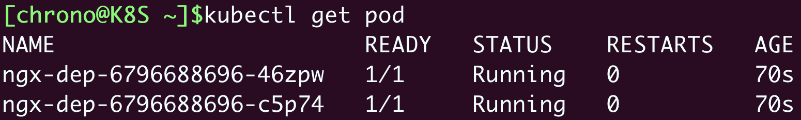
Pod名字里的那串随机数“6796……”就是Pod模板的Hash值，也就是Pod的“版本号”。
如果你变动了Pod YAML描述，比如把镜像改成 nginx:stable-alpine，或者把容器名字改成 nginx-test，都会生成一个新的应用版本，kubectl apply 后就会重新创建Pod：
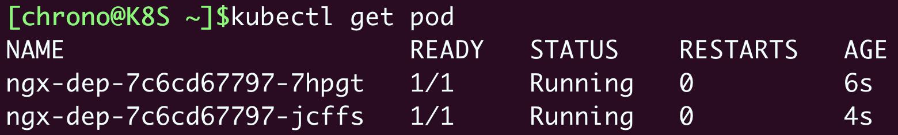
你可以看到，Pod名字里的Hash值变成了“7c6c……”，这就表示Pod的版本更新了。
Kubernetes如何实现应用更新
为了更仔细地研究Kubernetes的应用更新过程，让我们来略微改造一下Nginx Deployment对象，看看Kubernetes到底是怎么实现版本更新的。
首先修改ConfigMap，让它输出Nginx的版本号，方便我们用curl查看版本：
apiVersion: v1
kind: ConfigMap
metadata:
name: ngx-conf
data:
default.conf: |
server {
listen 80;
location / {
default_type text/plain;
return 200
'ver : $nginx_version\nsrv : $server_addr:$server_port\nhost: $hostname\n';
}
}
然后我们修改Pod镜像，明确地指定版本号是 1.21-alpine，实例数设置为4个：
apiVersion: apps/v1
kind: Deployment
metadata:
name: ngx-dep
spec:
replicas: 4
... ...
containers:
- image: nginx:1.21-alpine
... ...
把它命名为 ngx-v1.yml，然后执行命令 kubectl apply 部署这个应用：
kubectl apply -f ngx-v1.yml
我们还可以为它创建Service对象，再用 kubectl port-forward 转发请求来查看状态：
kubectl port-forward svc/ngx-svc 8080:80 &
curl 127.1:8080
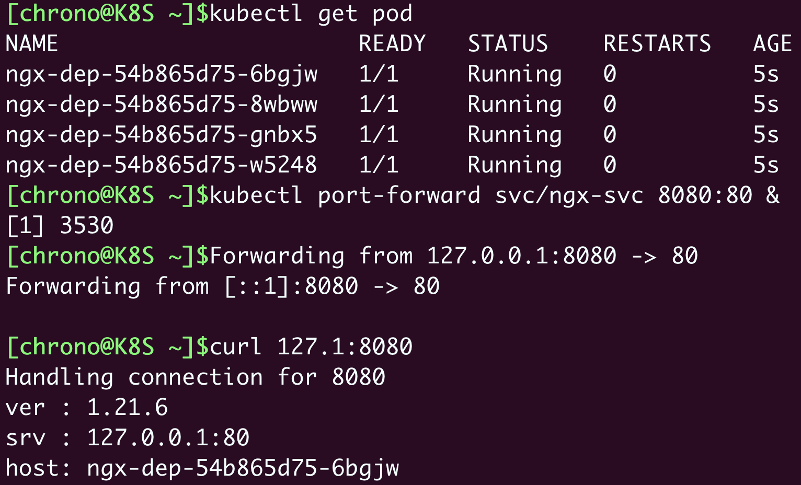
从curl命令的输出中可以看到，现在应用的版本是 1.21.6。
现在，让我们编写一个新版本对象 ngx-v2.yml，把镜像升级到 nginx:1.22-alpine，其他的都不变。
因为Kubernetes的动作太快了，为了能够观察到应用更新的过程，我们还需要添加一个字段 minReadySeconds，让Kubernetes在更新过程中等待一点时间，确认Pod没问题才继续其余Pod的创建工作。
要提醒你注意的是，minReadySeconds 这个字段不属于Pod模板，所以它不会影响Pod版本：
apiVersion: apps/v1
kind: Deployment
metadata:
name: ngx-dep
spec:
minReadySeconds: 15 # 确认Pod就绪的等待时间
replicas: 4
... ...
containers:
- image: nginx:1.22-alpine
... ...
现在我们执行命令 kubectl apply 来更新应用，因为改动了镜像名，Pod模板变了，就会触发“版本更新”，然后用一个新命令：kubectl rollout status，来查看应用更新的状态：
kubectl apply -f ngx-v2.yml
kubectl rollout status deployment ngx-dep
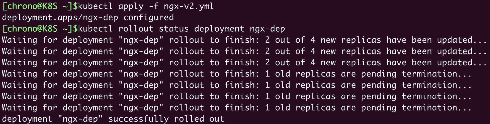
更新完成后，你再执行 kubectl get pod，就会看到Pod已经全部替换成了新版本“d575……”，用curl访问Nginx，输出信息也变成了“1.22.0”：
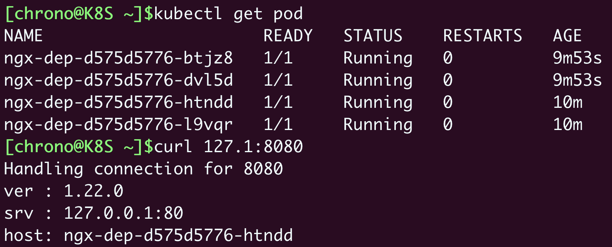
仔细查看 kubectl rollout status 的输出信息，你可以发现，Kubernetes不是把旧Pod全部销毁再一次性创建出新Pod，而是在逐个地创建新Pod，同时也在销毁旧Pod，保证系统里始终有足够数量的Pod在运行，不会有“空窗期”中断服务。
新Pod数量增加的过程有点像是“滚雪球”，从零开始，越滚越大，所以这就是所谓的“滚动更新”（rolling update）。
使用命令 kubectl describe 可以更清楚地看到Pod的变化情况：
kubectl describe deploy ngx-dep
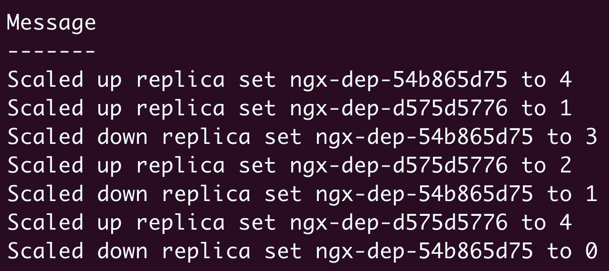
- 一开始的时候V1 Pod（即ngx-dep-54b865d75）的数量是4；
- 当“滚动更新”开始的时候，Kubernetes创建1个 V2 Pod（即ngx-dep-d575d5776），并且把V1 Pod数量减少到3；
- 接着再增加V2 Pod的数量到2，同时V1 Pod的数量变成了1；
- 最后V2 Pod的数量达到预期值4，V1 Pod的数量变成了0，整个更新过程就结束了。
看到这里你是不是有点明白了呢，其实“滚动更新”就是由Deployment控制的两个同步进行的“应用伸缩”操作，老版本缩容到0，同时新版本扩容到指定值，是一个“此消彼长”的过程。
这个滚动更新的过程我画了一张图，你可以参考它来进一步体会：
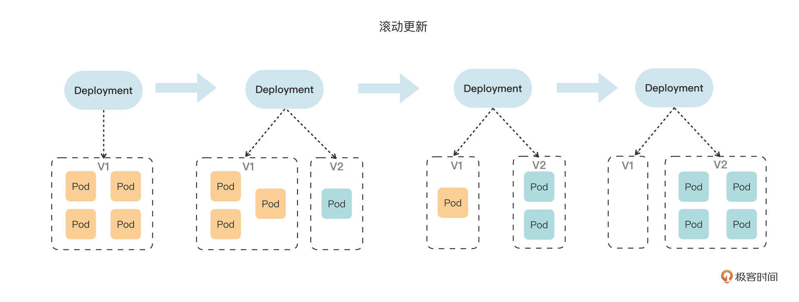
Kubernetes如何管理应用更新
Kubernetes的“滚动更新”功能确实非常方便，不需要任何人工干预就能简单地把应用升级到新版本，也不会中断服务，不过如果更新过程中发生了错误或者更新后发现有Bug该怎么办呢？
要解决这两个问题，我们还是要用 kubectl rollout 命令。
在应用更新的过程中，你可以随时使用 kubectl rollout pause 来暂停更新，检查、修改Pod，或者测试验证，如果确认没问题，再用 kubectl rollout resume 来继续更新。
这两个命令比较简单，我就不多做介绍了，要注意的是它们只支持Deployment，不能用在DaemonSet、StatefulSet上（最新的1.24支持了StatefulSet的滚动更新）。
对于更新后出现的问题，Kubernetes为我们提供了“后悔药”，也就是更新历史，你可以查看之前的每次更新记录，并且回退到任何位置，和我们开发常用的Git等版本控制软件非常类似。
查看更新历史使用的命令是 kubectl rollout history：
kubectl rollout history deploy ngx-dep
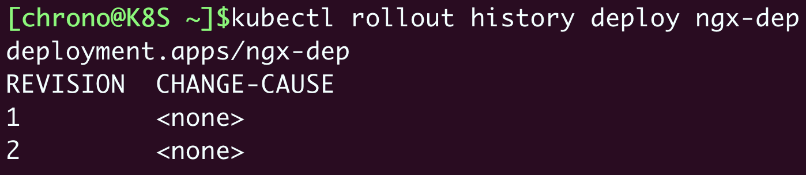
它会输出一个版本列表，因为我们创建Nginx Deployment是一个版本，更新又是一个版本，所以这里就会有两条历史记录。
但 kubectl rollout history 的列表输出的有用信息太少，你可以在命令后加上参数 --revision 来查看每个版本的详细信息，包括标签、镜像名、环境变量、存储卷等等，通过这些就可以大致了解每次都变动了哪些关键字段：
kubectl rollout history deploy --revision=2
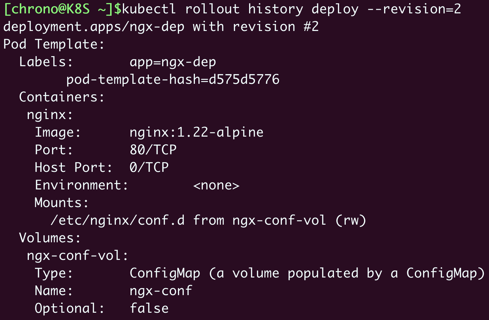
假设我们认为刚刚更新的 nginx:1.22-alpine 不好，想要回退到上一个版本，就可以使用命令 kubectl rollout undo，也可以加上参数 --to-revision 回退到任意一个历史版本：
kubectl rollout undo deploy ngx-dep
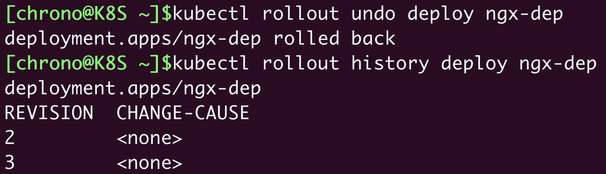
kubectl rollout undo 的操作过程其实和 kubectl apply 是一样的，执行的仍然是“滚动更新”，只不过使用的是旧版本Pod模板，把新版本Pod数量收缩到0，同时把老版本Pod扩展到指定值。
这个V2到V1的“版本降级”的过程我同样画了一张图，它和从V1到V2的“版本升级”过程是完全一样的，不同的只是版本号的变化方向：

Kubernetes如何添加更新描述
讲到这里，Kubernetes里应用更新的功能就学得差不多了。
不过，你有没有觉得 kubectl rollout history 的版本列表好像有点太简单了呢？只有一个版本更新序号，而另一列 CHANGE-CAUSE 为什么总是显示成 <none> 呢？能不能像Git一样，每次更新也加上说明信息呢？
这当然是可以的，做法也很简单，我们只需要在Deployment的 metadata 里加上一个新的字段 annotations。
annotations 字段的含义是“注解”“注释”，形式上和 labels 一样，都是Key-Value，也都是给API对象附加一些额外的信息，但是用途上区别很大。
annotations添加的信息一般是给Kubernetes内部的各种对象使用的，有点像是“扩展属性”；labels主要面对的是Kubernetes外部的用户，用来筛选、过滤对象的。
如果用一个简单的比喻来说呢，annotations 就是包装盒里的产品说明书，而 labels 是包装盒外的标签贴纸。
借助 annotations，Kubernetes既不破坏对象的结构，也不用新增字段，就能够给API对象添加任意的附加信息，这就是面向对象设计中典型的OCP“开闭原则”，让对象更具扩展性和灵活性。
annotations 里的值可以任意写，Kubernetes会自动忽略不理解的Key-Value，但要编写更新说明就需要使用特定的字段 kubernetes.io/change-cause。
下面来操作一下，我们创建3个版本的Nginx应用，同时添加更新说明：
apiVersion: apps/v1
kind: Deployment
metadata:
name: ngx-dep
annotations:
kubernetes.io/change-cause: v1, ngx=1.21
... ...
apiVersion: apps/v1
kind: Deployment
metadata:
name: ngx-dep
annotations:
kubernetes.io/change-cause: update to v2, ngx=1.22
... ...
apiVersion: apps/v1
kind: Deployment
metadata:
name: ngx-dep
annotations:
kubernetes.io/change-cause: update to v3, change name
... ...
你需要注意YAML里的 metadata 部分，使用 annotations.kubernetes.io/change-cause 描述了版本更新的情况，相比 kubectl rollout history --revision 的罗列大量信息更容易理解。
依次使用 kubectl apply 创建并更新对象之后，我们再用 kubectl rollout history 来看一下更新历史：
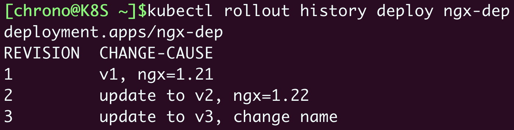
这次显示的列表信息就好看多了，每个版本的主要变动情况列得非常清楚，和Git版本管理的感觉很像。
小结
好，今天我们一起学习了Kubernetes里的高级应用管理功能：滚动更新，它会自动缩放新旧版本的Pod数量，能够在用户无感知的情况下实现服务升级或降级，让原本复杂棘手的运维工作变得简单又轻松。
再小结一下今天的要点：
- 在Kubernetes里应用的版本不仅仅是容器镜像，而是整个Pod模板，为了便于处理使用了摘要算法，计算模板的Hash值作为版本号。
- Kubernetes更新应用采用的是滚动更新策略，减少旧版本Pod的同时增加新版本Pod，保证在更新过程中服务始终可用。
- 管理应用更新使用的命令是
kubectl rollout，子命令有status、history、undo等。 - Kubernetes会记录应用的更新历史，可以使用
history --revision查看每个版本的详细信息，也可以在每次更新时添加注解kubernetes.io/change-cause。
另外，在Deployment里还有其他一些字段可以对滚动更新的过程做更细致的控制，它们都在 spec.strategy.rollingUpdate 里，比如 maxSurge、maxUnavailable 等字段，分别控制最多新增Pod数和最多不可用Pod数，一般用默认值就足够了，你如果感兴趣也可以查看Kubernetes文档进一步研究。
课下作业
最后是课下作业时间，给你留两个思考题：
- 今天学的Kubernetes的“滚动更新”，与我们常说的“灰度发布”有什么相同点和不同点？
- 直接部署旧版本的YAML也可以实现版本回退，
kubectl rollout undo命令的好处是什么？
欢迎在留言区积极参与讨论。如果觉得今天的内容对你有帮助，也欢迎转发给身边的朋友一起讨论，我们下节课再见。

© 2019 - 2023 Liangliang Lee. Powered by gin and hexo-theme-book.